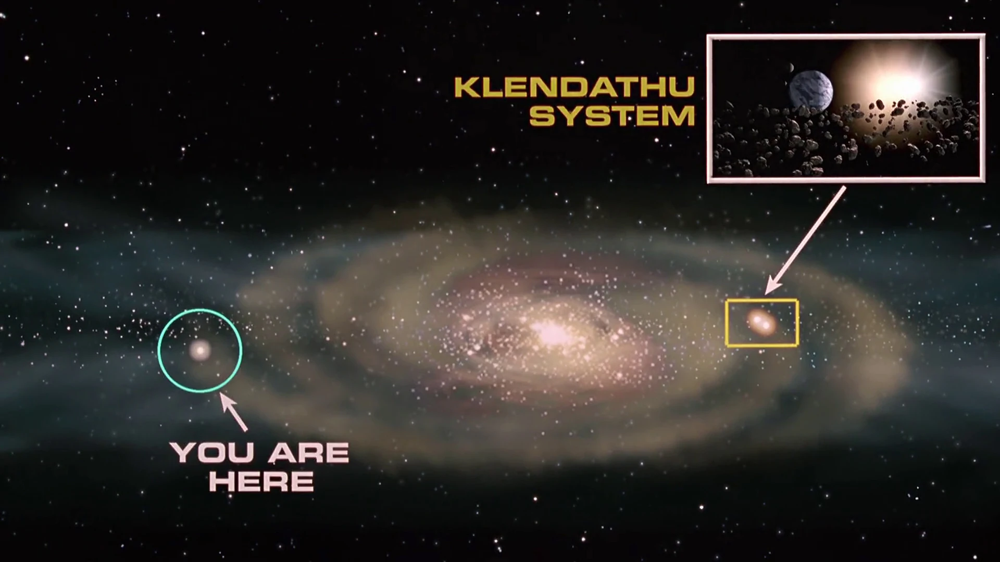

Our Mission

We seek to establish peace across the cosmos, so that all may live in harmony! Establishing new Terran colonies on new planets, and harboring positive relations with new species are just some of the many tasks that our ranks are involved in!
Our loyal troops also stand by to protect these new colonies from terrorist threats that seek to eradicate any life that they come across.
Our current missions involve fighting off the Arachnid scourge, as they wreak havoc on innocents and corrupt planets with their bug hives.
Gain your Citizenship!
Want to really prove to your friends and family that you are dedicated and loyal to the Federation? Do you want to work that cushy Federation job with all the benefits?
By enlisting with the Federal Service for just two years, you can rise above your civilian status to become a citizen!
Earn that right to vote, work in a government position, enjoy ease of access to licenses, and subsidization on tuition for schooling!
Force Branches
- Fleet Command
- Mobile Infantry
- Military Intelligence
- Fleet Command are responsible for
transportation of troops and supplies to
and from new planets, or ensuing conflict.
Certain academics benchmarks are
required to be accepted into Fleet ranks
- Ground Forces who are our first line of
defense against any threats, and those
who make first contact on new planets. A
majority of those who enlist are assigned
to fight within the Infantry, as there are
such a large amount of applications for
other branches.
- Military Intelligence is comprised of the
brightest minds our Federation has
produced. They are in charge of creating
new technology for the other branches,
and discovering countermeasures for any
foes they face in battle. Very few are
selected to serve in this branch.